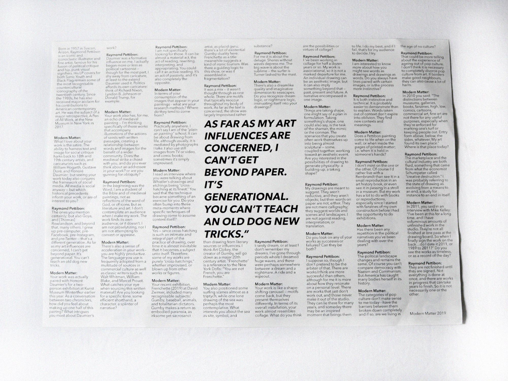
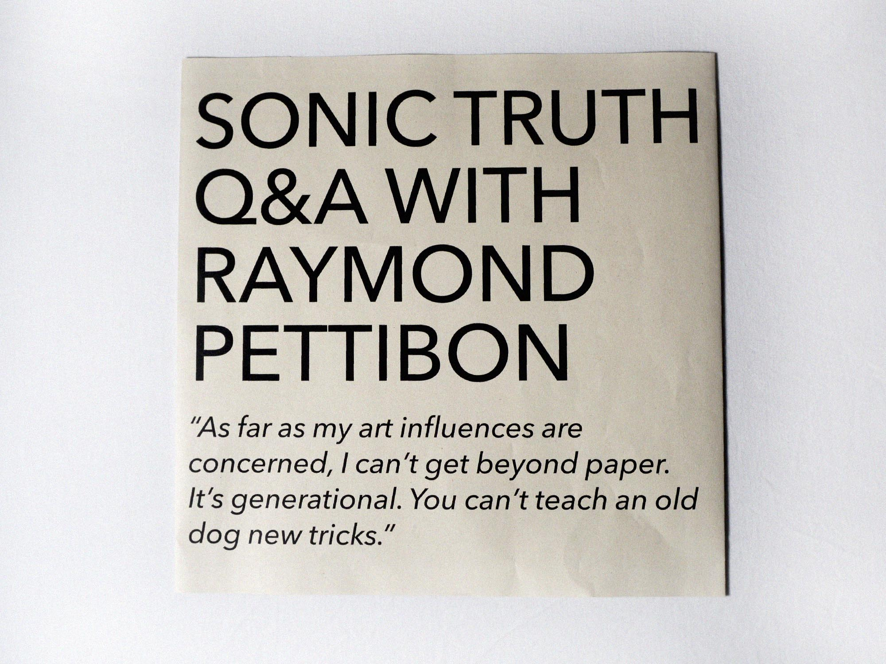
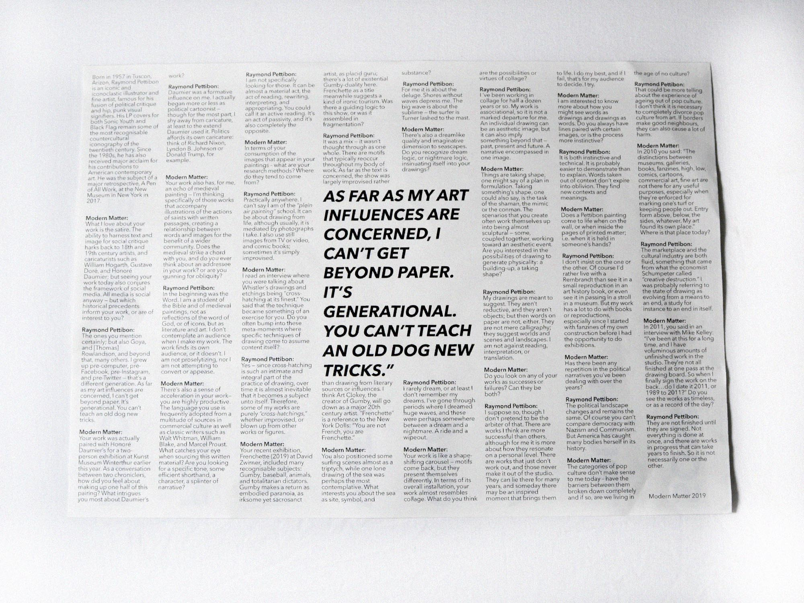
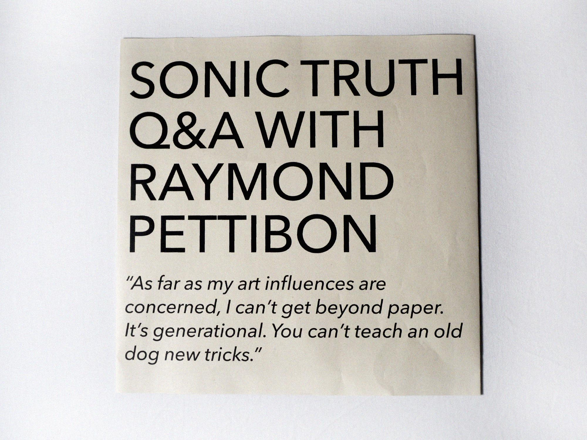

Sonic Truth
Raymond Pettibon is een van mijn favorite vormgevers, toen de opdracht om een interview vorm te geven voorbij kwam, aarselde ik niet met kiezen.
De titel zegt het al, 'Sonic Youth' een van de bands waar hij uitingen voor gemaakt heeft; flyers, albumcovers, etc. Zijn 'comic' collage stijl is iets waar ik mij goed in kan vinden en ook zelf in ontwikkeld ben. Wat betreft de opdracht was het de bedoeling om verschillende ontwerpkeuzes te maken voor de plaatsing van tekst. Omdat Pettibon veel met muziek te maken had, heb ik voor een vierkant drukvel gekozen.